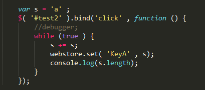

文件
1. webstore.js 封装好的js
2. demo1.html 检测浏览器使用哪种get, set方法
3. demo2.html 实例。使用webstore.js实现Web本地存储
4. test.html 存储量测试
5. test_result.html Evernot导出的测试结果
测试环境
win（win7）下：
IE10以及IE10的IE7/IE8/IE9模式
Chrome 31.0.1650.57 m
FireFox 25.0.1
Safari 5.7.1
Opera 17.0.1241.45
以及xp虚拟机下的IE6
win（win8）下：
IE10
Chrome 31.0.1650.57 m
FireFox 25.0.1
Linux（Ubuntu 13.10）下：
Chromium 29.0.1547.65
FireFox 25.0
demo1、demo2测试
以下是参与测试的浏览器及测试结果。demo1的结果代表浏览器使用哪种方式存储，demo2的结果表示实例中的数据能否正常存储。
| 浏览器 | demo1 | demo2 |
| IE10（win7） | localStorage | 正常 |
| IE10的IE9模式（win7） |
localStorage
|
正常 |
|
IE10的IE8模式（win7）
|
localStorage
|
正常
|
|
IE10的IE7模式（win7）
|
localStorage
|
正常
|
| IE6（win7 xp mode） | userData | 正常 |
| Chrome 31（win7） | localStorage | 正常 |
| FireFox 25（win7） | localStorage | 正常 |
| Safari 5（win7） |
localStorage
|
正常 |
| Opera 17（win7） |
localStorage
|
正常 |
| IE10（win8） |
localStorage
|
正常 |
| Chrome 31（win8） |
localStorage
|
正常 |
| FireFox 25（win8） | localStorage | 正常 |
| Chromium 29（Ubuntu 13.10） |
|
|
| FireFox 25.0（Ubuntu 13.10） |
|
|
值得注意的是在IE10的各种模式下都是使用localStorage存储，且相当于一个浏览器（本来就是一个-.-||），在一个模式下添加的数据在其他模式下都能看到。
存储量测试
首先对localStorage的存储量测试。参与测试的浏览器：win7下的Chrome31/IE10/FireFox25/Opera17
代码：
var s = 'a' ;
$( '#test2' ).bind('click' , function () {
//debugger;
while (true ) {
s += s;
webstore.set( 'KeyA' , s);
console.log(s.length);
}
});

测试结果在chrome，ie10，ff，opera下表现一致：


当字符串长度是4194304时，可以存储，再次翻倍准备存储时超出容量。
在safari下的结果：

safari的存储上限要少一些，对于safari不能存储4194304长度的字符串。
以上测试结果基本和预期一致，符合localStorage是5MB/2.5MB（区分不同的浏览器）的限制。
“对于localStorage而言，大多数桌面浏览器会设置每个来源5MB的限制。Chrome和Safari对每个来源的限制是2.5MB。”（《JavaScript高级程序设计（第3版）》第643页）
Chrome的测试结果是不是2.5MB，应该是Chrome的后续更新把限制提升到了5MB。
重点是对userData存储量的测试。（木桶定理-.-||）参与测试的浏览器win7 XP Mode下的IE6/win7下IE10的IE7模式
<i>测试IE7下userData的存储量
代码：
// userData测试（ie7）
var s = '';var a = 'aaaaaaaaaa';
$('#test2').bind('click', function () {
while (true) {
s += a;
webstore.set('KeyA', s);
console.log(webstore.get('KeyA').length);
}
});

这里对IE7的测试是在IE10的IE7模式下实现的。修改了判断的逻辑，强制使用userData存储。
测试结果：
<ii>测试IE6下userData的存储量
代码：
// userData测试（ie6）
var s = 'aaa';var a = 'aaaaaaaaaa';
$('#test2').bind('click', function () {
while (true) {
s += s;
webstore.set('KeyA', s);
alert(webstore.get('KeyA').length);
}
});

IE6的debugbar不支持console，所以直接用alert支持输出长度。测了两组（s的初始值分别为'aa'和'aaa'），最终的结果是：


可以看出IE6对于存储的限制应当也是64k。
综上对于两种存储方法的测试结果基本符合预期。（因为之前测试的失误，还以为userData的存储量与存储与是否存储在一个空间有关系，应该是因为浏览器缓存问题没有测准。）
跨页面测试
+++
剩余问题：
1. 除set(), get()外是否还需要其他的方法
2. 目前是存字符串，是否需要集成json转换，直接存取对象
3. 跨目录问题。
4. 实际应用中可能遇到的没有考虑到的问题